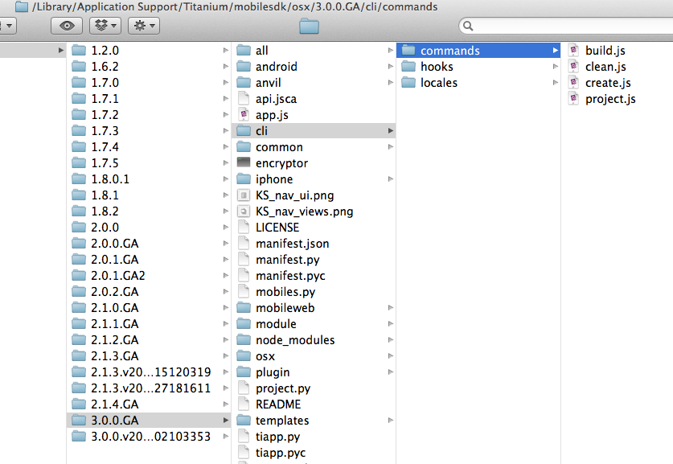
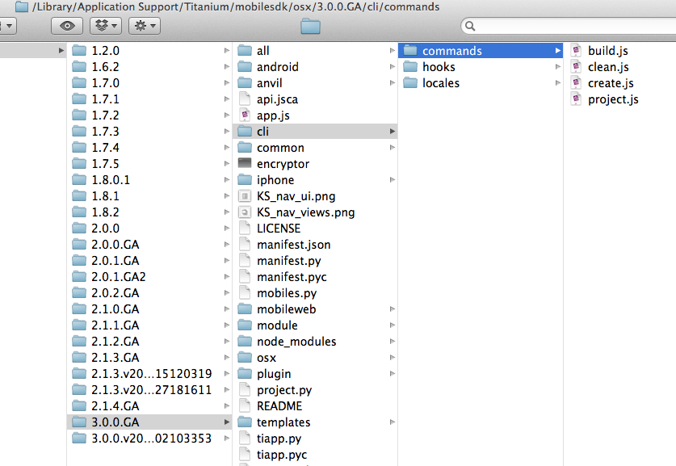
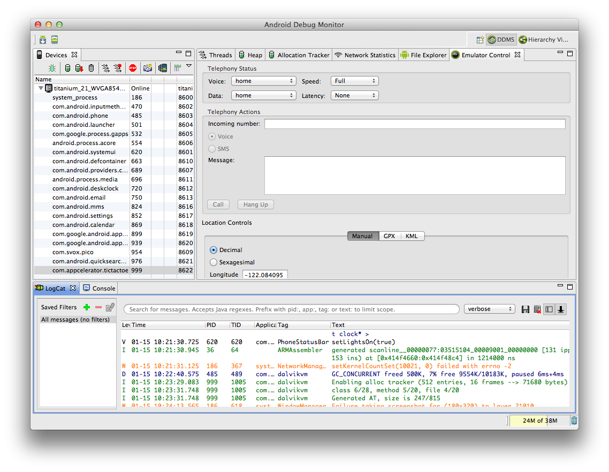
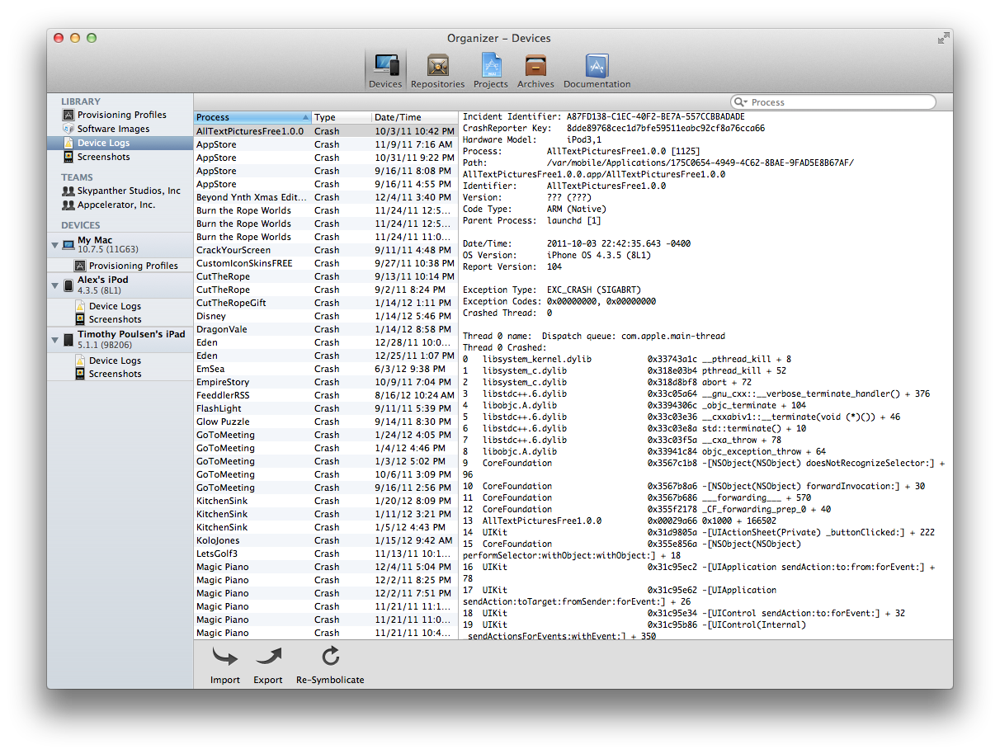
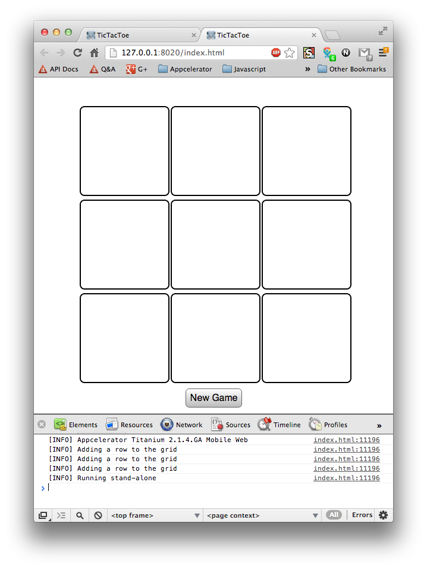

Debugging
Titanium Certified Developer (TCD) Training
In this lesson, you will:
- Debug the JavaScript of a Titanium app using Studio tools
- Debug Android apps using API tools
- Debug iOS apps using API and operating system tools
- Debug Mobile Web apps
 Topic
Topic
Studio Tools & Techniques
Debugging
Breakpoints, stepping through code, conditional breakpoints
Variables - examining variable state and affecting run-time variable values

Demo
- Set a breakpoint in an app
- Run the app in the simulator/emulator
- Examine the variable stack and alter live values
- Step through, into, and over breakpoints
Titanium Studio and the SDKs
Titanium Studio build scripts -- node.js or python (depending on SDK version)
Those scripts interact with native tool chains
Therefore, Titanium Mobile SDK requires and is dependent on these native tool chains
 

Topic
Android Tools & Techniques
Android SDK Files

- Install by unzipping
- Directories:
- platforms
- add-ons
- platform-tools
- tools
Android Platforms

androidscript- SDK v8 required
- Must use Google APIs version
- Current mix at:
http://developer.android.com/
about/dashboards
Android logging

Android Monitor
Dalvik Debug Monitor

Topic
iOS Tools & Techniques
What's in the box?


Xcode Device Logs
OS X Console

Instruments

Network Link Conditioner

- Spotlight search 'Network Link Conditioner'
- Select Install for all users of this computer
- Installs to Settings app
Topic
Mobile Web Tools & Techniques
Browser Console
Topic
Tips and Notes
Android Tips
- Much more sensitive to data types (text.value=var will throw error if var != 'string')
- Less than forgiving than iOS with syntax errors
- Use Monitor/ddms to view logs. Studio sometimes doesn't show all
- Check out adb features: remote shell, push/pull files, launch sqlite to access an app's database
Simulator vs. Emulator
| iOS Simulator | Android Emulator | |
|---|---|---|
| Description: | App runs as OS X process | App runs in real OS inside virtual computer |
| Good: | Fast, no code signing steps, use native tools (Console, Instruments) for debugging | Emulate many types of hardware, screen sizes and densities, higher-fidelity representation of device environment |
| Bad: | Unrealistically fast, fewer memory constraints, not case sensitive (unlike device) | Slow, slow, did we say slow? Debugging tools have limited view of Ti objects |
Summary
In this lesson, you:
- Debug the JavaScript of a Titanium app using Studio tools
- Debug Android apps using API tools
- Debug iOS apps using API and operating system tools
- Debug Mobile Web apps
Q&A
Lab Objectives
In this lab, you will:
- goal or objective, stated as a performance-based objective
- e.g.
- Display a list of fugitives in a table
- etc.
Solution Walkthrough